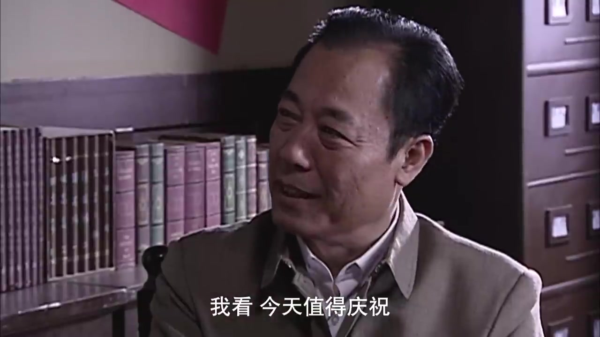
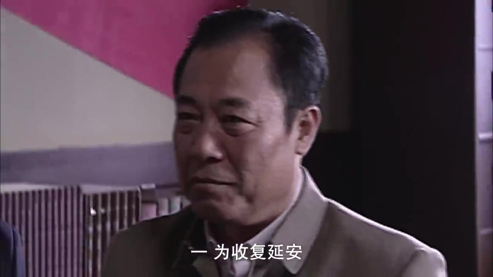
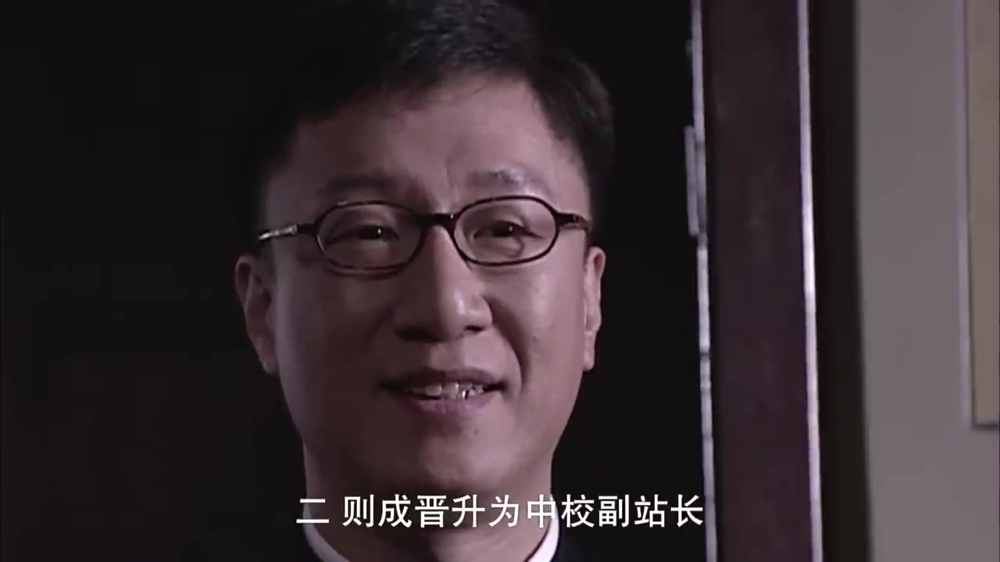
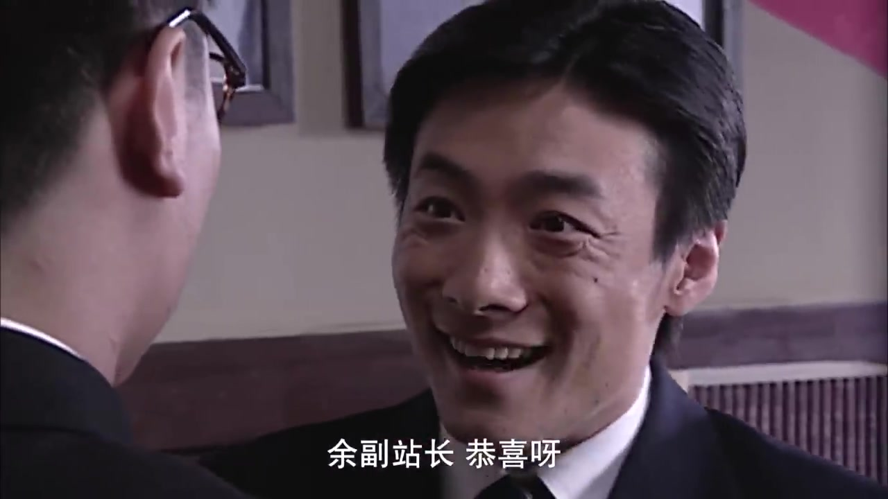
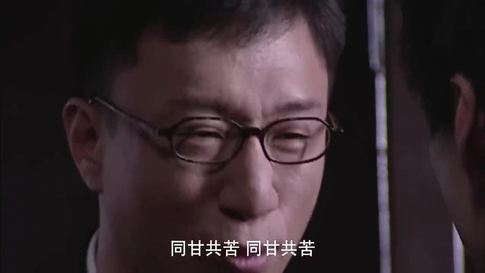
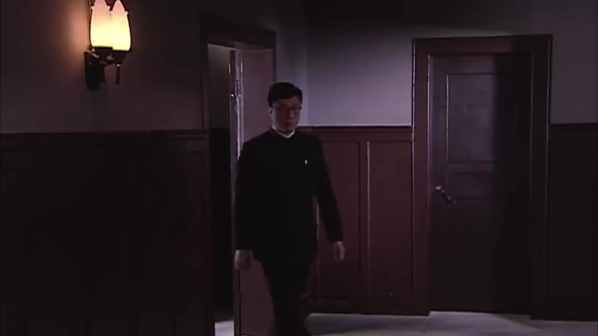

#1
seg_wu_01 [unit_dial_promotion_01]
⏱ 647.28s - 661.00s (13.72s)
真实原声台词 (Original Dialogue):
"今天值得庆祝 一为收复延安 二 则成晋升为中校副站长"
老周旁白 (Narration - foreshadow):
"老周聊谍战。观众总问站长信不信余则成？看这场委座嘉奖，看似春风得意，实则是老狐狸的试探局。"
真实源片抽帧验证 (Representative Frames Proof):

648.0s
吴站长手拿延安大捷嘉奖电文，满面春风

650.0s
吴站长宣告'今天值得庆祝，一为收复延安'

652.0s
余则成垂手立正聆听，神情谨慎恭顺
五维全息门禁判定 (5-Dimensional Grounding Gate):
✓ TEMPORAL: 时码区间合法且对齐✓ DIALOGUE: 对白对齐与原声完整性验证通过✓ VISUAL: 视觉人物与物理场景真实吻合✓ SEMANTIC: Level 5 Narrative/Editorial Match: 视听画面与台词精准支撑叙事立意✓ EDITORIAL: 叙事功能清晰且镜头无重复
#2
seg_wu_02 [unit_dial_vice_director_01]
⏱ 305.96s - 315.00s (9.04s)
真实原声台词 (Original Dialogue):
"还是跟李队长商量商量 李涯也不是个省油的灯 副站长就是你 谢谢老师栽培"
老周旁白 (Narration - none):
（本段原声独占，零旁白干扰）
真实源片抽帧验证 (Representative Frames Proof):
308.0s
吴站长靠坐大班椅吞吐雪茄，敲打人选
310.5s
吴站长手指余则成，当面宣布'副站长就是你'高光瞬间
313.0s
余则成微微躬身拱手：'谢谢老师栽培'
五维全息门禁判定 (5-Dimensional Grounding Gate):
✓ TEMPORAL: 时码区间合法且对齐✓ DIALOGUE: 对白对齐与原声完整性验证通过✓ VISUAL: 视觉人物与物理场景真实吻合✓ SEMANTIC: Level 5 Narrative/Editorial Match: 视听画面与台词精准支撑叙事立意✓ EDITORIAL: 叙事功能清晰且镜头无重复
#3
seg_wu_04 [unit_dial_celebration_01]
⏱ 661.00s - 675.00s (14.00s)
真实原声台词 (Original Dialogue):
"余副站长 恭喜呀 以后多多关照啊 同甘共苦 同甘共苦"
老周旁白 (Narration - interpretation):
"在老周看来，吴敬中从不靠物理档案查余则成。只要能敛财分红，看破不戳破，这句“同甘共苦”才是老狐狸的终极驭人术。"
真实源片抽帧验证 (Representative Frames Proof):

670.0s
吴站长起身走到余则成身旁亲切道喜

674.0s
吴站长拍打余则成肩膀：'余副站长恭喜呀，同甘共苦'

678.0s
师生两人相视而笑，展现利益捆绑的官场生存哲学
五维全息门禁判定 (5-Dimensional Grounding Gate):
✓ TEMPORAL: 时码区间合法且对齐✓ DIALOGUE: 对白对齐与原声完整性验证通过✓ VISUAL: 视觉人物与物理场景真实吻合✓ SEMANTIC: Level 5 Narrative/Editorial Match: 视听画面与台词精准支撑叙事立意✓ EDITORIAL: 叙事功能清晰且镜头无重复